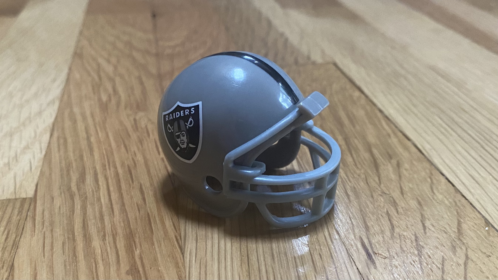

Back to Portfolio Main Page
Rare! One-of-a-kind, truly authentic Miniature Helmet Collection



Check out the details of this 1970 Dolphins Miniature Helmet

Why This Collection is Special
-
- Each helmet showcases some of NFL history.
-
- Many helmets are signed by legendary players.
-
- Some feature vintage logos that have changed over the years.
-
- Perfect for display in any sports collection.
-
- Great investment potential as collectibles appreciate in value.
Miniature NFL helmets become collectible when current, former, retired, and hall of fame players sign them. Even without a signature, many helmets become vintage when logos change over the years. If you are a collector, don't miss this one. It is a rare 1970 Raiders one of a kind miniature helmet.
Price of Each Collectible Helmet
-
$1000 - Raiders Miniature Helmet
-
$1000 - Browns Miniature Helmet
-
$1000 - Dolphins Miniature Helmet
-
$1000 - Rams Miniature Helmet
Don't miss the chance to buy this amazing collectible
This collection won't last!
Today only, your cost $4000.00!
Check out some history on football helmets, Wikipedia: Football Helments.
Check out these authentic mini NFL Helmets for comparison
Contact
Tovi
(123)456-7891
abc@defgh.com